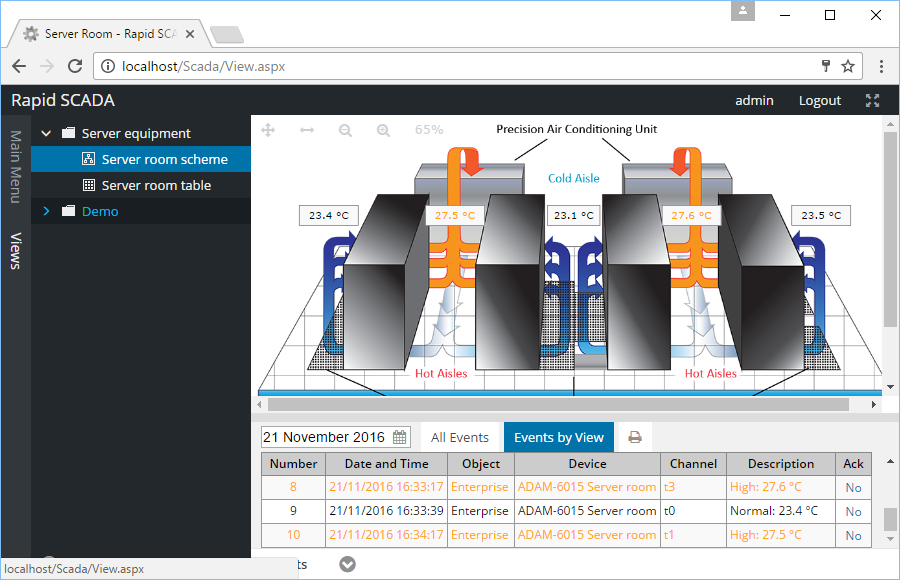
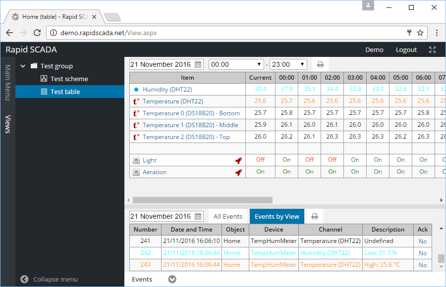

Webstation es una aplicación web que muestra información a un operador a través del navegador en diferentes formatos (tablas, esquemas, diagramas, informes, etc.) y permite enviar comandos. Genera informes en los formatos comúnmente utilizados HTML y Microsoft Excel.

Figura 1. Aplicación Webstation. Vista de Scheme (Esquema)

Figura 2. Aplicación Webstation. Vista de Table (Tabla)
El usuario puede elegir una vista (de tabla o de esquema) y una fecha para acceder a los datos archivados. Para mostrar un diagrama (curva) de un canal de entrada haga clic en el ícono de un elemento de una tabla, o en un elemento (valor númérico) de un esquema.
Webstation es accesible desde cualquier computadora o tableta conectada a la red de una organización, sin necesidad de instalar ningún software adicional. El acceso es gestionado por un administrador del sistema, quien define los derechos de los usuarios..
Las funcionalidades de la aplicación Webstation se pueden ampliar mediante la incorporación de complementos (plugins) adicionales. . Por ejemplo, Chart Pro Plugin amplía las capacidades de las gráficas de Rapid SCADA: agrega escalado, puede mostrar múltiples gráficos (curvas) y puede exportarlos a formatos PNG y PDF. Elastic Report Plugin permite generar informes con una configuraciones personalizadas. Con este complemento, puede crear casi que cualquier informe deseado. Los desarrolladores pueden descargar el código fuente de Rapid SCADA y la documentación correspondiente para aprender cómo implementar complementos.